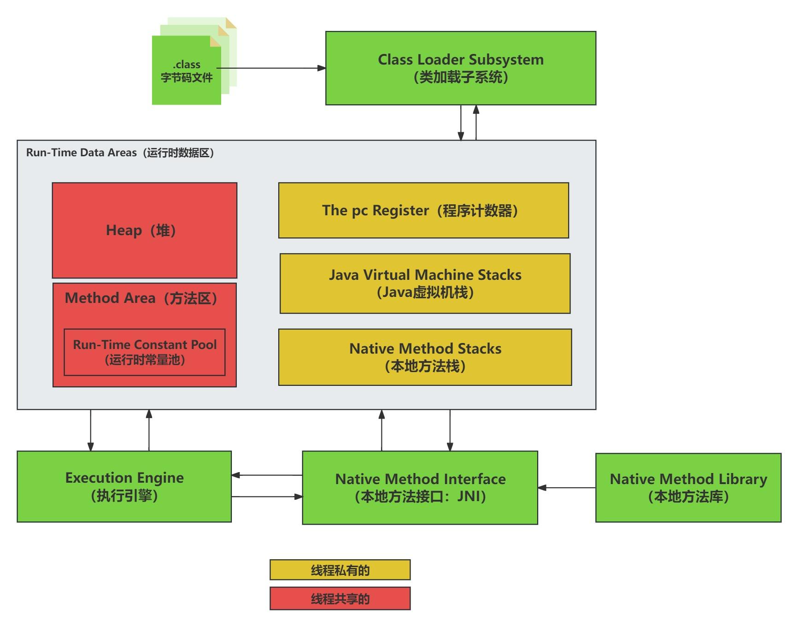
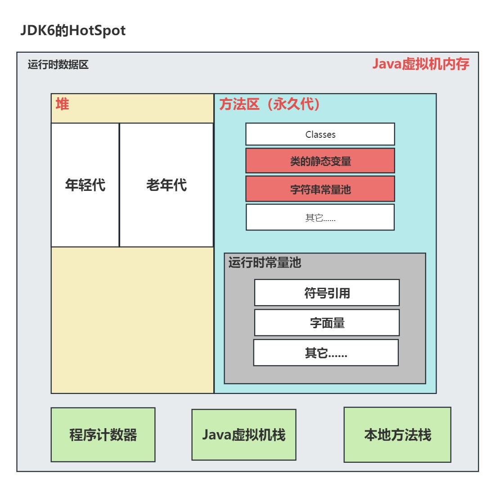
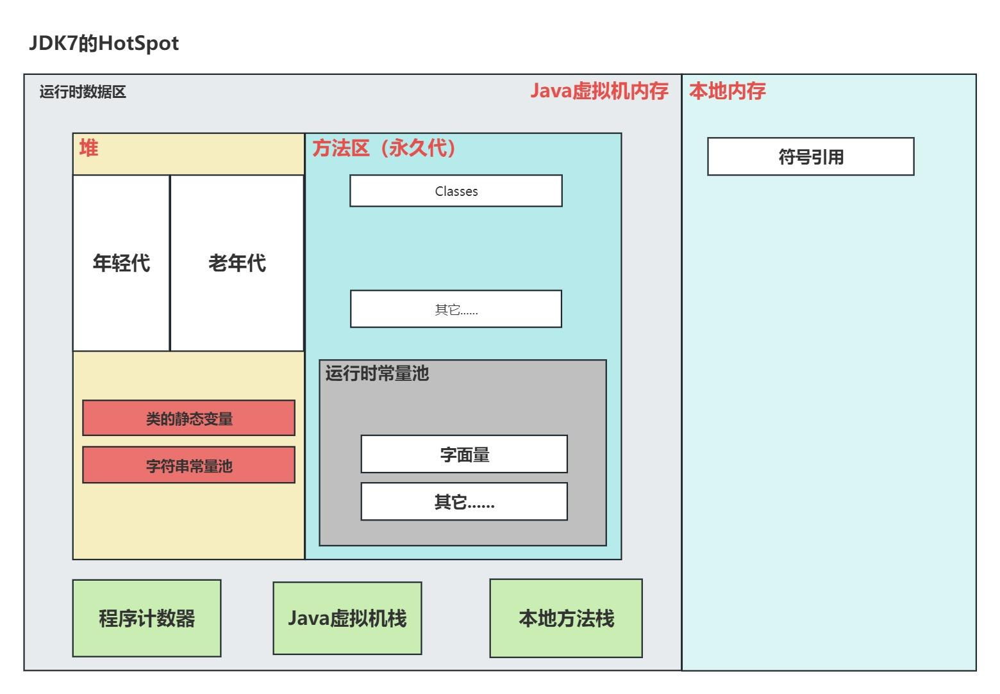
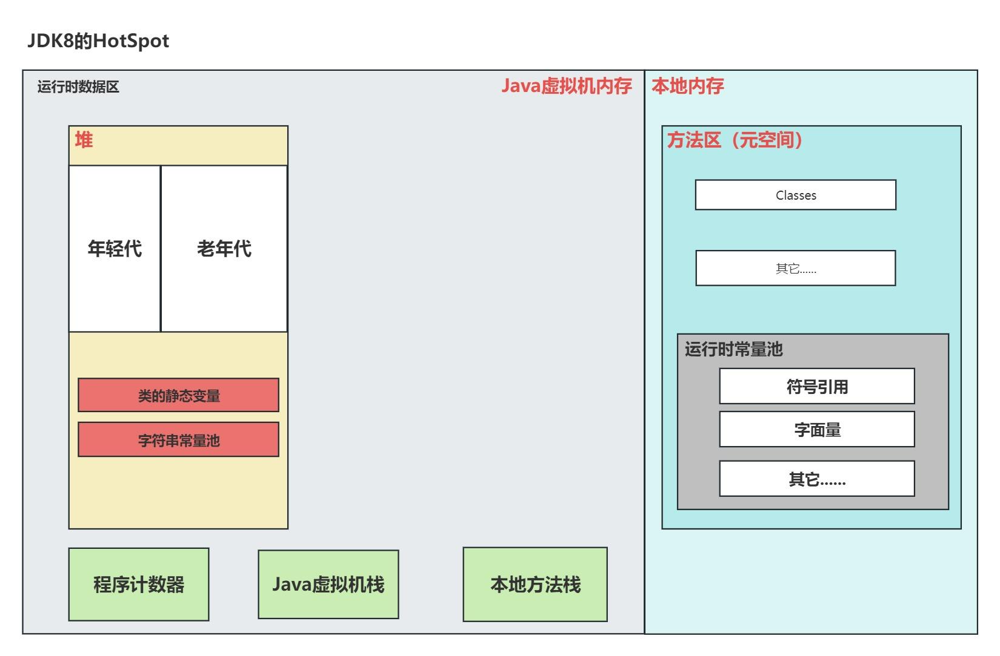

JVM
JVM 运行时数据区六大模块简介
JVM (Java虚拟机)的运行时数据区(Run-Time Data Areas)是Java程序运行时的核心内存结构，主要包括以下六大模块。
- 程序计数器 (The pc Register)
- 作用：记录当前线程执行的字节码指令地址
- 特点
- 线程私有，每个线程有独立的程序计数器
- 执行Java方法时记录正在执行的虚拟机字节码指令地址
- 执行Native方法时值为空(Undefined)
- 唯一不会发生内存溢出的区域
- Java虚拟机栈 (Java Virtual Machine Stacks)
- 作用：存储方法调用的栈帧(Frame)
- 特点
- 线程私有，生命周期与线程相同
- 每个方法执行时会创建一个栈帧，用于存储局部变量表、操作数栈、动态链接、方法出口等信息
- 可能出现StackOverflowError(栈深度超过限制)和OutOfMemoryError(扩展时无法申请足够内存)
- 堆 (Heap)
- 作用：存放对象实例和数组
- 特点
- 线程共享，是垃圾收集器管理的主要区域
- 可分为新生代(Eden、Survivor区)和老年代
- 可以处于物理上不连续但逻辑上连续的内存空间
- 可能出现OutOfMemoryError
- 方法区 (Method Area)
- 作用：存储已被虚拟机加载的类信息、常量、静态变量等
- 特点
- 线程共享
- 在HotSpot VM中也称为"永久代"(PermGen)，但在JDK 8后被元空间(Metaspace)取代
- 运行时常量池是方法区的一部分
- 可能出现OutOfMemoryError
- 运行时常量池 (Run-Time Constant Pool)
- 作用：存放编译期生成的字面量和符号引用
- 特点
- 是方法区的一部分
- 具备动态性，运行时可以将新的常量放入池中(String的intern()方法)
- 可能出现OutOfMemoryError
- 本地方法栈 (Native Method Stacks)
- 作用：为虚拟机执行Native方法服务
- 特点
- 线程私有
- 与虚拟机栈类似，但服务于Native方法
- 可能由虚拟机实现者自由实现
- 可能出现StackOverflowError和OutOfMemoryError

JVM 实现
- HotSpot【重点】：HotSpot 由 Oracle 公司开发，是目前最常用的虚拟机实现，也是默认的 Java 虚拟机，默认包含在 Oracle JDK 和 OpenJDK 中
- JRockit：JRockit 也是由 Oracle 公司开发。它是一款针对生产环境优化的 JVM 实现，能够提供高性能和可伸缩性
- IBM JDK：IBM JDK 是 IBM 公司开发的 Java 环境，采用了与 HotSpot 不同的 J9 VM，能够提供更小的内存占用和更迅速的启动时间
- Azul Zing：Azul Zing 是针对生产环境优化的虚拟机实现，能够提供高性能和实时处理能力，适合于高负载的企业应用和实时分析等场景
- OpenJ9：OpenJ9 是由 IBM 开发的优化的 Java 虚拟机实现，支持高度轻量级、低时延的 GC、优化的 JIT 编译器和用于健康度测试的可观察性仪表板
JDK6的HotSpot
- 年轻代：刚new出来的对象放在这里。
- 老年代：经过垃圾回收之后仍然存活的对象。
- 符号引用：类全名，字段全名，方法全名等。
- 这个时期的永久代和堆是相邻的，使用连续的物理内存，但是内存空间是隔离的。
- 永久代的垃圾收集是和老年代捆绑在一起的，因此无论谁满了，都会触发永久代和老年代的垃圾收集。

JDK7的HotSpot
JDK7的HotSpot，这是一个过渡的版本，该版本相对于JDK6来说，变化如下：
- 类的静态变量转移到堆中了
- 字符串常量池转移到堆中了
- 运行时常量池中的符号引用转移到本地内存了

JDK8及以后的HotSpot
- 彻底删除永久代（为了避免OOM错误的发生）
- 将方法区的实现转移到本地内存
- 将符号引用重新放回运行时常量池
